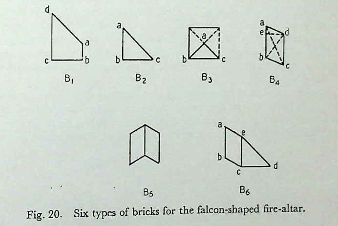
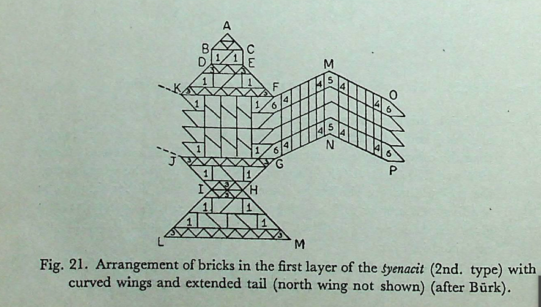
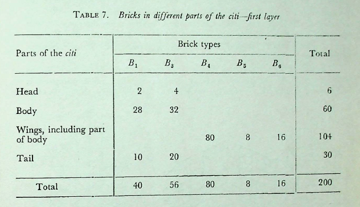

विश्वास-प्रस्तुतिः
द्विपुरुषं पस्चादर्धपुरुषं पुरस्ताच्चतुर्भागोनः पुरुष आयामोऽष्टादशकरण्यो पार्श्वयोस्ताः पञ्चदशपरिगृह्णन्ति । तत्पुच्छम् ॥ १९.१ ॥
English
(An area bounded by a length of) 2 purușas on the western side, 1⁄2 puruşa on the eastern side, √/18 (times ‡ purușa or 30 aṅg) on each of the two (southern and northern) sides and having a height of puruşa can accommodate 15 (ṣoḍaśi) bricks. This is the tail.
English - comment
19.1. The tail. As per measurements given, ABCD is the shape of the tail, where AD 60 aṅg., BC = 240 añg., and \(AE (= DF = BE= CF) = 90\) aṅg. The measurement of each of the two sides AB and DC is given in the text as aṣṭādaśakaraņi. It means a side that produces a square equal to the area of 18 squares. Obviously, these 18 squares are 18 ṣoḍaśīs, that is, \(18\srt{16}\) sq pu. or 900 × 18 sq. aṅg. The required side is therefore \(\frac{1}{4} \srt{18}\) pu. or \(30\sqrt{18}\) aṅg. The point is explained by Karavinda as follows: aṣṭādaśa karotītyaṣṭādaśakaraṇi | ṣoḍaśīnām prakṛtatvātṭāsām aṣṭādaśānāṁ karaṇi | te khalu triṣoḍaśipramāṇanavatyangulasamacaturaśrasyākṣṇayābhūte / Thus, Karavinda puts it as the diagonal of a square of side 90 aṅg. (Fig. 19(b)), which again equals \(30\sqrt{18}\) aṅg. That the area of the tail is equivalent to that of 15 ṣoḍasis is clear from the figure.
मूलम्
द्विपुरुषं पस्चादर्धपुरुषं पुरस्ताच्चतुर्भागोनः पुरुष आयामोऽष्टादशकरण्यो पार्श्वयोस्ताः पञ्चदशपरिगृह्णन्ति । तत्पुच्छम् ॥ १९.१ ॥
टीका
पश्चात्तिर्यङ्भानी द्विपुरुषा । पुरस्तादर्धपुरुषा । पादोनपुरुषायामा । पार्श्वयोरष्टादशषोडशीः करोति । अष्टादशकरणी सा पार्श्वयोः । ता एताः पञ्चदशषोडशीः परिगृह्रन्ति । कथमर्धपुरुषव्यासा पादोनपुरुषायामा षट्करोति? तस्याभियो द्वे चतुरश्रे समे सर्वतः पादोनपुरुषमात्रे । तावक्ष्णया लिखेत् । एकैकमर्धं त्यजेत् । शिष्टं प्रत्येकमर्धपञ्चमं करोति । अर्धपञ्चमं अर्धपञ्चमं नव । नवसु षट्सु क्षिप्तेषु पञ्चदश । तत्पुच्छम् ॥
करविन्दीया व्याख्या
श्येना यते
द्वितीयश्येनमुपदेष्टुं सैव श्रुतिः पुनरपि पठिता । तत्र विशेषमाह
पुरुषस्य त्तरे
षोडशीः षोडशभागपरिमिताः । ताभिः षोडशीबिः । सारत्निप्रादेशःसप्तविधोऽग्निर्विंशतिशतं संपद्यते । तथाहि सप्त स्थापयित्वा षोडशीबिर्गुणिते द्वादशोत्तरं शतं भवति । अर्धे षोडशीभिर्गुणिते अष्टौ । तेष्वष्टसु क्षिप्तेषु विंशत्युत्तरं शतं षोडश्यो भवन्ति । तासां चत्वारिंशदात्मनि चत्वारिंशत्षोडशिनीक्षेत्राण्यात्मेत्यर्थः । तिस्राःशिरसि षोडश्यःस्युः । पञ्चदश पुच्छे । पञ्चदशषोडश्यः पुच्छक्षेत्रम् । एकत्रिंशद्दक्षिणे पक्षे । तथोत्तरे पक्षे । एकात्रिंशत्षोडशीक्षेत्रं दक्षिणः पक्ष उत्तरश्च । एवं विभज्य विमानमाह
अध्य त्मा
अनुपृष्ठयं चत्वारिंशद्द्वे शते चाङ्गुलय आयामः । विस्तारोऽशीतिशतमङ्गुल्यस्तिर्यक् । एवं दीर्घं चतुरश्रं विहृत्य श्रोण्यंसेष्वर्धपुरुषप्रमाणानि चत्वारि चतुरश्राणि कृत्वा तान्यात्मपार्श्वमानीनिष्ठकोणतः तिर्यङ्भानीनिष्ठकोणं प्रत्यक्ष्णयालिखेत् । लेखानां बहिर्भूतास्त्यजेत् । चत्वारिंशदवशिष्यन्ते । स आत्मा भवति । कथम्? आयामतोऽष्टौ षोडश्यः । तिर्यक्षट् । अष्टौ षड्गुणिता अष्टाचत्वारिंशत् । तत्र श्रोण्यंसेभ्यो द्वेद्वे निरस्याष्टौ निरस्ता
भवन्ति । शिष्टचाश्वत्वारिंशदात्मनि भवन्ति ॥
शिरस्य च्छिरः
शिरः प्रदेशे आत्मनोंऽसयोः पुरतः पृष्ठयायामर्धपुरुषेण चतुरश्रं कृत्वा पूर्वस्याः करण्याः इत्यादिकृते तिस्रः परिशिष्यन्ते । तच्छिरो भवति ॥
पुरु त्तरः
पुरुषमात्रं तिर्यगायामः । द्विपुरुषमात्रमर्धाष्टमाङ्गुलयश्च । एवं दक्षिणे पक्षे दीर्घचतुरश्रं कृत्वा । तथोत्तरेऽपि ॥
पक्षाग्रे न्ते
पक्ष्स्याग्रे पुरुषचतुर्थेन त्रिंशदङ्गुलेन चत्वारि चतुरश्राणि कृत्वा तानि प्रत्येकं दक्षिणाप्रत्यग्व्यवलिख्य पूर्वाण्यर्धानि निरस्येत् । एवमेकत्रिंशत्षोडश्यः परिशिष्यन्ते । स दक्षिणः पक्षः । कथं? पक्षे द्वात्रिंशत्षोडश्यः । षोडशो भागश्वैकः । तास्त्रयस्त्रिंशत् । ताभ्यां चतुर्ष्वर्धेषु निरस्तेषु एकत्रिंशत्परिशिष्यन्ते । एवमेवोत्तरः पक्षः । तत्र चतुरक्षाण्युत्तराप्रत्यागक्ष्णयाविलिख्य पूर्वार्धानि निरस्येत् ॥
पक्षाग्र मनम्
पक्षाग्रमुत्सृज्य त्रिंशदङ्गुलमपहाय मध्ये पक्षस्य प्राचीं लेखामालिखेत् । पक्षाग्रे उत्सृष्टे शेषः पक्षः अर्धतृतीयाङ्गुलोनविंशत्यधिकशतद्वयाङ्गुलम् । तस्य मध्ये सपादाङ्गुलोनदशाधिकशताङ्गुलेन पश्चादारभ्य प्रगायतां लेखां पक्षमतीत्यालिखेत् । पश्चिमे पक्षाप्यये पुरुषमात्रं वेणुं निधाय नियम्यापरं वेणोरन्तरं दक्षिणाप्राक्लेखायां निपातयेत् । स पश्चिम पक्षान्तात्प्राक्पञ्चाशदङ्गुले पञ्चविंशतितिलाधिके निपतति । तत्र नितोदंबिन्दुं कुर्यात् । तस्माच्च प्राचीनलेखायामेव पुरुषमात्रे द्वितीयं नितोदं कुर्यात । नितोदयोः नानान्तावालिखेत् । नितोदयोरारभ्य पक्षान्तावभि नानापृथकालिखेत् । पश्चिमान्नितोदादारभ्य पश्चिमपक्षाग्रं पक्षाप्ययं च प्रत्यगालिखेत् । तत्पक्षनमनं तदेतत्पक्षस्य नमनं भवति । पूर्वस्मन्नितोदादारभ्य पूर्वं पक्षाग्रं पक्षाप्ययं च प्रत्यगलिखेत् । तत्पक्षनमनं पक्षस्य नमनं भवति ।
एते तः
ऋजुः ॥
द्विपु च्छम्
पुच्छस्याग्रं द्विपुरुषप्रमाणम् । तस्य मूलमर्धपुरुषप्रमाणम् । आयामश्चतुर्भागोनः पुरुषः । अष्टादशकरण्यौ पार्श्वयोः । अष्टादश करोतीत्यष्टादशकरणी । षोडशीनां प्रकृतत्वात्तासां अष्टादशानां करणी । ते खलु त्रिषोडशीप्रमाणनवत्यङ्गुलसमचतुरश्रस्याक्ष्णयाभूते । तथाहि पुच्छमूलाद्दक्षिणतः उत्तरतश्च पार्श्वमानी तिर्यङ्भानी चतुर्भागोनपुरुषप्रमाणोपेता । त्रिभिर्नवेति नवषोडशीक्षेत्रस्याक्ष्णयारज्जुभूते । अत्र चतुरश्रस्याक्ष्णयारज्जुः द्विस्तावतीं भूमिं करोतीति तेऽष्टादशकरण्यौ षोडशीनाम् । ता एताश्चतस्रः करण्यः । द्विषोडशिकाष्टषोडशिके तिर्यङ्भान्यावष्टा दशकरण्यौ पार्श्वमान्यौ पञ्चदश षोडशीः परिगटह्णन्ति । कथम्? अर्धपुरुषव्यासा पादोनपुरुषायामा षट्करोति । तस्याभितो द्वे चतुरश्रे समे सर्वतः पादोनपुरुषमात्रे । तावक्ष्णया लिखेत् । शिष्टं प्रत्येकमर्धपञ्चमं करोति । अर्धपञ्चममर्धपञ्चमं च नव । नवसु षट्सु क्षिप्तेषु पञ्चदश । तत्पुच्छं पुच्छंसंज्ञं भवति । करणान्युच्यन्ते ॥
सुन्दरराजीया व्याख्या
अथोक्तमेव श्येनचितं प्रकारान्तरेण व्याख्यातुं ब्राह्नणं पुनरुपन्यस्यति
श्येन यते
पुरुषस्य द्यते
षोडश्यः षोडशांशाः । ताश्चतुर्भागीया इष्टकाः विंशत्यधिकं शतम् । “शदन्तविंशतेश्वेति” डः । सारत्निप्रादेशः सप्तविधोग्निः पुरुषक्षेत्रस्य षोडशीभिर्विंशत्यधिकं शतं सम्पद्यते ॥
तासां त्मनि
आत्मनि चत्वारिंशत्षोडश्यो भवन्ति ॥
तिस्रः त्तरे
अथात्मनो विमान आह
अध्यर्धात्मा
षोडशीनां निरस्नप्रकारोऽप्ययान प्रति श्रोण्यंसानित्युक्तो वेदितव्यः ।
शिर त्तरः
षोडशभागोर्ऽधाष्टमा अङ्गुलयः । अरत्निप्रादेशरहितप्रकृतिके तु पूर्ववत्पक्षायामस्य त्रिंशदङ्गुलहानिर्द्रष्टव्या । द्विपुरुषायामे द्वात्रिंशत्षोडश्यः । षोडशभागेन चैका । एवं त्रयस्त्रिंशत् । ततः
पक्षा ष्यन्ये
दक्षिणेषां दक्षिणपूर्वाष्यर्धानि निरस्येत् । उत्तरेषामुत्तरपूर्वाणि ।
पक्षा नमनं पक्षाङ्ग्र त्रिंशदङ्गुलं चतुरश्रकृतमुत्सृज्य शिरसि पक्षस्य सार्धसप्तदशद्विशताङ्गुलस्य मध्ये लेखां कृत्वा पक्षाप्ययस्यापरान्ते पुरुषमात्रं वेणुं नियम्य तस्यां लेखायां निपातयेत् । सा यत्र निपतति लेखायां तत्र नितोदं कुर्यात् । शङ्कुं निहन्यात्तत्र पुरुषं नियभ्य ततः पुरस्तात्पुरुषान्ते नितोदं कृत्वा तदनुगुणं पूर्वापरावन्तावालिखेत् । पूर्वश्येने द्विपुरुषां रज्जुमित्युक्तमेव संनमनमत्र प्रकारान्तरेणोक्तमनुसन्धातव्यम् ॥
एते ख्यातः
द्विपु पुच्छं अष्टादशानां षोडशीनां करण्यो नव तिलयुक्ते सप्तविंशतिशताङ्गुले पार्श्वयोरक्ष्णयारूपे भवतः । पुच्छात्मशिरसां षोडशी संख्या भूमौ लिखित्वा द्रष्टव्या ॥
कपर्दिभाष्यम्
विश्वास-प्रस्तुतिः
षोडशीं चतुर्भिः परिगृह्णीयात् ॥ १९.२ ॥
English
The one-sixteenth (ṣoḍaśī) brick is to be bounded by four sides (whose measures are) :
मूलम्
षोडशीं चतुर्भिः परिगृह्णीयात् ॥ १९.२ ॥
टीका
पुरुषस्य षोडशभागे या तिष्टति सा षोडशी । तां चतुर्भिः फलैकः वक्ष्यमाणैः परिगृह्णीयात् कारयेदिति यावत् ।
विश्वास-प्रस्तुतिः
अष्टमेन त्रिभिरष्टमैश्चतुर्थेन चतुर्थसविशेषेणेति ॥ १९.२ ॥
English
† purușa, § purușa, ‡ purușa and √ purușa.
मूलम्
अष्टमेन त्रिभिरष्टमैश्चतुर्थेन चतुर्थसविशेषेणेति ॥ १९.२ ॥
विश्वास-प्रस्तुतिः
अर्धेष्टकां त्रिभिर्द्वाभ्यां चतुर्थाभ्यां चतुर्थसविशेषेणेति ॥ १९.३ ॥
English
A half brick is bounded by three sides, two sides by † purușa each and the other by V2 purușa.
मूलम्
अर्धेष्टकां त्रिभिर्द्वाभ्यां चतुर्थाभ्यां चतुर्थसविशेषेणेति ॥ १९.३ ॥
विश्वास-प्रस्तुतिः
पादेष्टकां त्रिभिश्चतुर्थेनैकं चतुर्थसविशेषार्धाभ्यां चेति ॥ १९.४ ॥
English
A quarter brick is bounded by three sides,-one side by 1 purușa and the other two by V purușa each.
मूलम्
पादेष्टकां त्रिभिश्चतुर्थेनैकं चतुर्थसविशेषार्धाभ्यां चेति ॥ १९.४ ॥
विश्वास-प्रस्तुतिः
पक्षेष्टकां चतुर्भिर्द्वाभ्यां चतुर्थाभ्यां द्विसप्तमाभ्यां चेति ॥ १९.५ ॥
English
A brick for use in the wing (pakṣeṣṭakā) is bounded by four sides, two sides by ‡ purușa each and the other two by purușa each.
मूलम्
पक्षेष्टकां चतुर्भिर्द्वाभ्यां चतुर्थाभ्यां द्विसप्तमाभ्यां चेति ॥ १९.५ ॥
विश्वास-प्रस्तुतिः
पक्षमध्यीयां चतुर्भिर्द्वाभ्यां चतुर्थाभ्यां द्विसप्तमाभ्यां चेति ॥ १९.६ ॥
English
A brick for use in the sides, two sides by middle of the wing (pakṣamadhyāyā) is bounded by four puruşa each and the other two by purușa each.
मूलम्
पक्षमध्यीयां चतुर्भिर्द्वाभ्यां चतुर्थाभ्यां द्विसप्तमाभ्यां चेति ॥ १९.६ ॥
विश्वास-प्रस्तुतिः
पक्षाग्रीयां त्रिभिश्चतुर्थेनैकं चतुर्थसप्तमाभ्यामेकं चतुर्थसविशेषसप्तमाभ्यां चेति ॥ १९.७ ॥
English
A brick for use at the end of the wing (pakṣāgrīyā) is bounded by three sides, -one side by purușa, one side by (+7) purușa, and the remaining side by ( √ + 4) purușa.
मूलम्
पक्षाग्रीयां त्रिभिश्चतुर्थेनैकं चतुर्थसप्तमाभ्यामेकं चतुर्थसविशेषसप्तमाभ्यां चेति ॥ १९.७ ॥
टीका
पुरुषस्याष्टमेन पञ्चदशाङ्गुलेन । त्रिभिरष्टमैः तेनैव त्रिगुणितेन पञ्चचत्वारिंशदङ्गुलेन । चतुर्थसविशेषेण चतुर्भागसविशेषेण । “प्रमाणं तृतीयेन वर्धयेत्” इत्यादिना वर्धितेन द्विचत्वारिंशदङ्गुलेन चतुर्दशतिलयुक्तेन । एवमेतैश्चतुर्भिः कारिता षोडशी । अर्धेष्टकां त्रिभिः परिगृह्णीयादिति सर्वत्र शेषः ॥
द्वाभ्यमिति त्रिंशदङ्गुलाभ्याम् । सविशेषेणोक्तप्रमाणेन । एतैस्त्रिभिः कारयेत् । पादेति गतमेतत् । चतुरिति चतुर्थेनैकम् । चतुर्थस्य सविशेषः
चतुर्थसविशेषः । तस्यार्धाभ्याम् । पक्षेति पक्षार्थमिष्टका पक्षेष्टका । तां चतुर्भिः परिगृह्णीयात् । द्वाभ्यां चेति द्वाभ्यां चतुर्थाभ्यां पुरुषसप्तमाभ्याम् । अस्य नमनमुपरिष्टाद्वक्ष्यते । पक्षमध्य गतं चतुर्थाभ्यां द्विसप्तमाभ्यां वक्रभूताभ्यामित्येतैश्चतुर्भिः पक्षमध्यीयां करोति । पक्षेति गतम् । चतुर्थेनेति पुरुषचतुर्थेनैकं चतुर्थसप्तमाभ्यां वक्रभूताभ्यामेकं चतुर्थसविशेषसप्तमाभ्यामेव ॥
करविन्दीया व्याख्या
षोड णेति
पुरुषस्य षोडशभागे या तिष्ठाति सा षोडशी । तां चतुर्भिः चतुष्प्रकारैः फलकैःषोडशीं परिगृह्णीयात् सम्पादयेत् । अष्टमेन प्रकृतत्वात्पुरूषस्य । पञ्चदशाङ्गुलेनेति यावत् । त्रिभिरष्टमैः पञ्चचत्वारिंशदङ्गुलैः । चतुर्थेन त्रिंशदङ्गुलेन । चतुर्थसविशेषेण द्विचत्वारिंशदङ्गुलेन सार्धचतुर्दशतिलाधिकेन अक्ष्णयावस्थितेन । इतिशब्दश्वार्थे । एतेनचैतेन चेति अष्टमी त्रिरष्टम्यौ पार्श्वमान्यौ । चतुर्थतत्सविशेषौ तिर्यङ्भान्यौ । चतुर्थस्यैव सविसेषप्राप्तयर्थं चतुर्थशब्दः ॥ एवमेतैश्चतुर्भि.ः फलकैः षोडशीं कारयेत् ॥
अर्धे चेति
परिगृह्णीयादिति शेषः । अर्धेष्टकां त्रिभिः फलकैः परिगृह्णीयात् । त्रिंशदङ्गुलाभ्यां द्विचत्वारिंशदङ्गुलेन सचतुर्दशतिलेन च त्रिभिः फलकैः ॥
पादे चेति
एकविंशत्यङ्गुलाभ्यां ससप्ततिलाभ्यां त्रिंशदङ्गुलेन चैकेन चेति त्रिभिः ॥
पक्षा ति
त्रिंशदङ्गुलाभ्यां सप्तदशाङ्गुलाभ्यां पञ्चतिलाधिकाभ्यां चेति । पक्षेष्टकां द्वाभ्यां चतुर्थाभ्यां समाभ्यां च कारयेत् । अस्य च नमनमुपरिष्टाद्वक्ष्यति ॥
पक्ष ति
पक्षमध्यमयोग्या पक्षमध्यीया । तां त्रिंशदङ्गुलाभ्यां चतु स्त्रिंशदङ्गुलभ्यां द्विसप्तदशाह्गुलाभ्यां दशतिलाधिकाभ्यां चेति चतुर्भिः ॥
पक्षा ति
पक्षाग्रयोग्या पक्षाग्रीया । तां त्रिंशदङ्गुलेनैकं पञ्चतिलाधिकसप्तचत्वारिंशदङ्गुलेनैकं तथैकोनविंशतितिलाधिकेन एकोनषष्टयङ्गुलेनैकमिति त्रिभिः फलकैः परिगृह्णीयात् । एवं षट्करणान्युक्तानि । पक्षेष्टकाः पक्षमध्यीयाः पक्षाग्रीया इति त्रयाणां तत्र तत्रोपधाने योग्यत्वाय क्षेत्रसमत्वाय
सुन्दरराजीया व्याख्या
अथकरणानि
षोडशीं णेति
पूर्वश्येनचतुर्थ्येषा । एतां चतुर्भिः फलकैः परिगृह्णीयात् । तत्राष्टमेन त्रिभिरष्टमैरिति पार्श्वफलके । उत्तरे तिर्यक्फलके । सविशेषं चतुर्थं चतुर्थस्य द्विकरणी चतुर्दश तिलाः द्विचत्वारिंशदङ्गुलाः ।
अर्धे णेति
पादे चेति
पूर्वश्येननमन्येषा ।
चतुर्थे त्रिंशदङ्गुले पार्श्वफलके । सप्तमे सपञ्व्रतिलसप्तदशाङ्गुले तिर्यक्फलके ।
पक्षमध्यी चेति
द्वे पक्षेष्टके । समस्ते एषा । पूवश्येने द्वितीयावद्रूपम् ।
पक्षा चेति
पक्षेष्टका अर्धेष्टका । समस्ते एका ।
कपर्दिभाष्यम्
विश्वास-प्रस्तुतिः
पक्षकरण्याःसप्तमं तिर्यङ्मानी । पुरुषचतुर्थं च पार्श्वमानी । तस्याक्ष्णया रज्ज्वा करणं प्रजृम्भयेत् ॥ १९.८ ॥
English
For making the brick for use in the wing (pakṣeṣṭakā) a rectangle of breadth puruşa and length puruşa is made and then lengthened by a diagonal (so that the other diagonal is shortened and the figure assumes the form of a parallelogram).
मूलम्
पक्षकरण्याःसप्तमं तिर्यङ्मानी । पुरुषचतुर्थं च पार्श्वमानी । तस्याक्ष्णया रज्ज्वा करणं प्रजृम्भयेत् ॥ १९.८ ॥
टीका
दीर्घीकुर्यात् । अनयेति करणी । पक्षकरणी पक्षस्य करणी पक्षकरणी इष्टका । तस्या उक्तं करणं पुरुषसप्तमं तिर्यङ्भानी पुरुषचतुर्थी पार्श्वमानीति । पक्षेष्टकां चतुर्भिरिति । तमेव दीर्घीभूतं करणं प्रजम्भयेत् दीर्घीकुर्यात् । कथमेकया क्ष्णया रज्ज्वायतया दीर्घीकुर्यात्करणम्?
विश्वास-प्रस्तुतिः
पक्षनमन्याः सप्तमेन फलकानि नमयेत् ॥ १९.८ ॥
English
The slabs are bent by the seventh of the distance between the root (apyaya) and the bending point of the wing (pakṣanamanī).
English - comment
19.2-19.8. Types of bricks. 6 types of bricks have been used in covering the alternate. layers of the fire-altar. These are-
\(B_{1}\) - the four-sided one-sixteenth (śoḍaśi) brick, of which \(ab = \frac{1}{8}\) or 15 aṅg., \(bc = \frac{1}{4}\) pu. or 30 aṅg., \(cd = \frac{3}{8}\) pu. or 45 aṅg. and \(da = \frac{1}{4}\sqrt{2}\) aṅg. The area is \(30 \times 15 + \frac{1}{2} \times 30 \times 30 = 900 sq.\) aṅg.
\(B_{2}\) - the half-brick (ardheṣṭakā), e,g., a half ṣoḍaśi, diagonally cut; \(ab = bc= \frac{1}{4}\) pu. or 30 aṅg., \(frac{1}{4} \sqrt{2}\) pu.
\(B_{3}\) -the quarter brick (pādeṣṭakā), e.g. \(\frac{1}{4}\) ṣoḍāśī, diagonally cut; \(bc = pu; ab = ac = \frac{1}{4} pu; ab = ac= \frac{1}{8}\sqrt{2} pu. or 15\sqrt{2}\) aṅg.

Fig. 20. Six types of bricks for the falcon-shaped fire-altar.
\(B_{4}\) - the brick, suitable for use in either wing (pakṣeṣṭakā), is a parallelogram of sides \(\frac{1}{4}\) and \(\frac{1}{7}\) pu. The shape is so given that one diagonal ac is longer than the other bd, whose dimensions are given by Sundararāja as 40 aṅg. 12 ti and 27 aṅg. 20 ti. The purpose is to make it fit in the wing, so that the inclinations are similar to those of the wing at either side of the bending. Clearly de is \(\frac{1}{7}\) of 108₫ aṅg. or 15 aṅg. 18 ti (Sundararāja gives this value as 15 aṅg. 18 ti). The shapes of \(B_{4}\), \(B_{5}\) and \(B_{6}\) are further explained in 19.8.
\(B_{5}\) -The brick suitable for use in the middle of the wing (pakṣamadhyiyā) at the bending. This is just 2 \(B_{4}s\) joined along the longer side.
\(B_{6}\) -The brick suitable for use at the end of the tail (pakṣāgriyā) broken in the form of four triangles. It consists of two parts, e.g. parallelogram abcd and the triangle ecd, and is a combination of \(B_{4}\) and \(B_{2}\) joined about the common side \(\frac{1}{4}\) pu. The inclination is so adjusted that the parallelo- gram part fits in the parallelogram part and the triangular in the triangular part of the wing.
मूलम्
पक्षनमन्याः सप्तमेन फलकानि नमयेत् ॥ १९.८ ॥
टीका
पक्षनमनीति नितोदलेखामूलयोरन्तरालम् । तत्सप्तधा विभज्य एकेन भागेन । किमुक्तं भवति? यावत्प्रजम्भितेन तस्याःसप्तमी तिर्यग्भवति तावत्प्रजम्भयोदिति । एवं यथा भवति तथा फलकानि नमयेत् । नतं नमनं कुर्यात् ।
पक्षनमनी सा पक्षाग्राणामप्येवमेव । तत्र श्लोकः
तिलैःषोडशभिर्न्यूनं तिर्यक्स्यात्षोडशाङ्गुलम् ।
तथा तथा चतुर्भ्यां च सप्तमाभ्यां च नामयेत् ॥
विश्वास-प्रस्तुतिः
उपधाने चतस्रः पादेष्टकाः पुरस्ताच्छिरसि । अपरेण शिरसोऽप्ययं पञ्च । पूर्वेण पक्षाप्ययावेकादश । अपरेणैकादश पूर्वेण पुच्छाप्ययं पञ्चापरेण पञ्च पञ्चदश पुच्छाग्रे ॥ १९.९ ॥
English
In the placement (of bricks), 4 quarter bricks are placed in the east of the head, 5 on the western side of the juncture of the head (with the body), 11 on the eastern side of the (eastern) juncture of the wings (with the body), 11 on the western side of the (western) juncture of the wings (with the body), 5 on the eastern side of the juncture of the tail (with the body) and 5 on the west of it, and 15 at the end of the tail.
English - comment
19.9-20.4. Placement of bricks in the first layer. The placement of bricks is clearly explained in Fig. 21. The rules start with the placement of \(B_{3}\) bricks, -4 at the tip of the head ABC, 5 west of the line DE, 11 east of the line KF joining the eastern points of juncture of the wings with the body, 11 west of JG, the western line of juncture, 5 each on the eastern and the western side of IH, the junction line between the tail and the body, and finally 15 at the end of the tail LM. Thus 56 \(B_{3}s\) are used (tã evaitāḥ ṣaṭpañcāśatpādeṣṭakāḥ—Kapardi).
\(4 B_{6}s\) are placed at each end OP of the two wings, such that the triangular parts cover the triangular ends and the parallelogram parts part of the adjoining para-llelogram of the wing. 4 \(B_{6}s\) are placed at either junction FG, JK of the wings with the body such that the triangular parts lie in the body. The total number of \(B_{6}s\) used is 16. North of FG and south of JK each, 4 \(B_{1}\) bricks are placed in the body with their diagonally cut sides fitting exactly with the similar diagonal sides of the Bes. The remaining space in either wing is covered by 4 \(B_{5}s\) at the bending MN and by 40 B\(B_{4}s\), -20 \(B_{4}s\) each on either side of the bending; \(B_{4}s\) are turned eastwards. (catvārimsată catvāriṛśatā pakṣeṣṭakābhiḥ prāgāyatābhiḥ pakṣau pracchadayet-Karavinda).
The spaces of the fire-altar now left out are in the head between the rows of \(B_{3}\) bricks, in the body between the \(B_{3}s\) at the eastern and western ends and in the middle enclosed on east and west sides by \(B_{3}s\) and on south and north sides by \(B_{1}s\), and in the tail between \(B_{5}s\) at the juncture and the end. These spaces are to be

Fig. 21. Arrangement of bricks in the first layer of the fyenacit (2nd. type) with curved wings and extended tail (north wing not shown) (after Bürk).
covered by \(B_{1}s\), such that at the inclined edges at the four corners of the body and the two sides of the tail, the diagonal sides \((\frac{1}{4} \sqrt{2} pu., saviśeṣāh, as Kapardi explains)\) face outwards; elsewhere 2 \(B_{1}s\) lie with their diagonals touching each other so as to form a rectangle 60 aṅg. x 30 aṅg., as the geometry clearly indicates. The number of bricks and their types in the different parts of the fire-altar are given in Table 7.
TABLE 7. Bricks in different parts of the citi-first layer

मूलम्
उपधाने चतस्रः पादेष्टकाः पुरस्ताच्छिरसि । अपरेण शिरसोऽप्ययं पञ्च । पूर्वेण पक्षाप्ययावेकादश । अपरेणैकादश पूर्वेण पुच्छाप्ययं पञ्चापरेण पञ्च पञ्चदश पुच्छाग्रे ॥ १९.९ ॥
टीका
उपदध्यादिति शेषः । पुरस्ताच्छिरसि घोणाकारे एका । तस्याः पश्चात्तिस्रः । अपरेणेति कर्णाभरणवत् । पादेष्टका एव । पूर्वेति आत्मनि पक्षाप्यययोः पूरस्तादेकादश अपरेण पक्षाप्ययावेकादश एता एव । पूर्वेति पूच्छस्याप्ययस्य पुरस्तात्पञ्च पश्चाच्च पञ्च । पञ्चदशेति पुच्छाग्रे पञ्चदश । ता एवैताः षट्पञ्चाशत्पादेष्टकाः ॥
एकोनविंशः खण्डः
करविन्दीया व्याख्या
च वक्रता कार्येत्याह
पक्षक येत्
प्रथम्यात्सामर्थ्याच्च पक्षेष्टकाकरणीविषयमिदं लिखया विभक्तस्य पक्षार्धस्य करणी पक्षकरणी । सा सपादाङ्गुलोन दशशताङ्गुला । तस्याःसप्तमं साष्टादशतिला पञ्चदशाङ्गुला ऋज्ववस्थिता प्रजम्ब्यमानस्य करणस्य यथा तिर्यङ्नानी भवति तथा तत्करणं ऋज्वक्ष्णया प्रजम्भयेत् प्रकर्षेण नमयेत् । पार्श्वमानी तु प्रज्म्भ्यमानेऽपि करणे पुरुषचतुर्थमेव । प्रजम्भतिरत्रापि मानार्थ एव । एतदुक्तं भवति करणस्य एकस्यां कोट्यां रज्जुं प्रबध्य तां कोटिमितारां कोटिं प्रति अक्ष्णया बलेन कर्षयेत् । यथा आकर्षणे कृते द्वयोः कोट्योः सन्निकर्षेण पार्श्वमान्योरन्तरालमृजुत्वेन पक्ष्करण्याःसप्तमं भवति न न्यूतं नाप्यधिकं तथा प्रजम्भयेत् । तिर्यङ्नान्योरन्तरालमृज्ववस्थितमपि पुरुषचतुर्थमेव । अनेन तिर्यङ्मान्या ह्रासः क्रियते वक्रत्वाय क्षेत्रसमत्वाय च । अथवा साष्टादशतिलं पञ्चदशाङ्गुलं तिर्यङ्मानीं कृत्वा त्रिंशढङ्गुलं पार्श्वमानीं च कृत्वा ताभ्यां चतुर्श्रं विहृत्य तस्याक्ष्णयारज्ज्वा पक्षेष्टकाकरणं प्रजम्भयेत् । एतदुक्तं भवति उक्तप्रकाराक्ष्णयारज्ज्वधिकां रज्जुंमीत्वा तया पक्षेष्टकाकरणस्यैकां कोटिं बध्वा तां कोटिं अन्या कोटिं प्रत्यक्ष्णया जम्भयेत् मनयेत् । यथा तयोः कोटयोरन्तरालं एतदक्ष्णयारज्जुःसम्भवति तथा नमयेदित्यर्थः । एवं कृते अस्य करणस्यैकाक्ष्णयारज्जुः सार्धद्द्वयङ्गुलेन द्राघीयसी भवति । अन्या तेनैव हसीयसी भवति ॥
व्याख्या द्वितीया यैः कैश्विदुक्ता नाञ्जस्यभागिनी ॥
पक्षेष्टकाकरणस्य प्रजम्भनेन नमनविधिमुक्त्वा पक्षमध्यीयापक्षाग्रीयाकरणयोर्नमनसिद्धयर्थं तत्फलकानां नतिरुच्यते पक्षनमनी यया मात्रया पक्षो नम्यते सा पक्षनमनी । सा च पक्षमध्यलेखायाः प्रथमनितोदात्पश्चिममात्रा । सा च पञ्चविंशतितिलाधिकपञ्चाशदङ्गुलेत्युक्ता । तस्याःसप्तमं सार्धाष्टतिलं सप्ताङ्गुलम् । तेन फलकानि पक्षमध्यीयापक्षाग्रीयाकरणयोर्दीर्घानि यानि फलकानि तानि नमयेत् वकीकुर्यात् । अयमर्थः यथा मध्ये कृतेन नमनेन पक्ष्मध्यीयांभागद्वयं पक्षकरण्या सप्तमं तिर्यङ्मानी पुरुषचतुर्थं च पार्श्वमानीत्युक्तप्रकारं भवति । तथा द्विसप्तफलकयोर्मध्ये सप्तममात्रे पक्षनमन्याःसप्तमेन एकस्मिन् फलके नतिमेकस्मिन्नुदञ्चं कुर्यात् ॥
तत्र श्लोकाः
पक्षेष्टकायाः करणं तथा रज्ज्वा प्रजम्भयेत् ।
तस्य तिर्यग्यथा पक्षकरण्याःसप्तमं भवेत् ॥
पक्षमध्यीयाकरणे द्राघीयः फलकद्वये ।
नमनीसप्तमेन स्यान्नतिःसप्तममात्रके ॥
पक्षाग्रीयाकरणस्याप्येषैव नमनक्रिया ।
सप्तमेंऽशे नतिस्तस्य भागोनेऽन्यो भवेदृजुः ॥
साष्टादशतिलं तिर्यग्यथा पञ्चदशाङ्गुलम् ।
भागानामिष्टकानां च तथा स्याभमनक्रिया ॥
आद्यश्येने त्वादिमस्य करणस्य प्रजम्भनम् । ष
फलं षष्ठः पक्षकरणी षष्ठव्यासो यथा भवेत् ॥
द्वितीयस्य तृतीयस्य प्रषष्ठानां नतेः फलम् ।
व्यासस्य पक्षकरणी षष्ठता नाष्टमे नतिः ॥
आद्यश्येनविषयमिदं श्लोकद्वयम् ॥
पक्षेष्टकाः चतस्रोऽत्र षट्च पादेष्टका अपि ।
चोडानाकसदामर्धजानोर्दशमकारिताः ॥
उप रसि
उपधानकाले चतस्रः पादेष्टकाःशिर (सि) सः पूर्वभागे पुरस्तादुपदध्यात् । तासां चतसृणामेका पुरस्तात्बाह्यविशेषात्प्रागग्रा । ततः पश्चात्तिस्रः । तासु मध्यमा प्रत्यगग्रा ॥
अप पञ्च
शिरसोऽप्ययस्य परतः पञ्च । प्रत्यगग्रे द्वे । अपुच्छात्पादाप्यये इत्येव ॥
पूर्वे दश
अपरेण पक्षाप्यययोः पुरतः । आत्मनैकादश । पञ्च प्रत्यगग्राः ॥
अपश श
अपरेण पश्चिमपक्षाप्यययोः पश्चादेकादश । ष्ट्प्रत्यगग्राः ॥
पूर्वे च
पुच्छाप्ययस्य पुरतः पञ्च । तासु प्रत्यगग्राः तिस्रः ॥
अप च
पुच्छाप्ययस्य पुरतः पञ्च । तासु प्रत्यगग्रे द्वे ॥
पञ्च ग्रे
पुच्छाग्रे पञ्चदश उपधेयाः । तासु सप्त प्रत्यगग्राः । ता एताःषट्पञ्चाशत्पादेष्टकाः ॥
सुन्दरराजीया व्याख्या
पक्ष येत्
पक्षकरणी पक्षार्धस्य तिर्यङ्मानी पादोननवशताङ्गुला । अर्धे तस्य सप्तमं पञ्चदशाङ्गुलं साष्टादशातिलम् । तस्य करणस्य यथा तिर्यङ्नानी भवति पार्श्वमानी त्रिंशदङ्गुलैव तथाक्ष्णया रज्ज्वा करणं प्रजम्भयेत् नमयेत् । एकः कर्णः चत्वारिंशदङ्गुलो द्वादशतिलान्वितः । अपरः सप्तविंशको विंशतितिलयुक्तः । आरत्नि (प्रादेश) रहिते (ष्वे)(त्वे) एकः कर्णः सार्धत्रयोविंशकः । अन्यः पञ्चतिलोनस्त्रिचत्वारिंशदङ्गुलः इष्टकाव्यासश्च त्रयोदशाङ्गुलस्त्रयोदशतिलयुक्तः । अथ पक्षाग्रीयापक्षमध्ययोर्नमनमाह
पक्ष येत्
पक्षनमनी पुरुषमात्री । तस्याः सप्तमेन पक्षाग्रीयापक्षमध्ययोः पक्षेष्टकांशस्य तिर्यक्फलकानि नमयेत् । तस्य साष्टादशतिलपञ्चदशाङ्गुलव्यासस्य पक्षेष्टकांशस्य तिर्यक्फलके यथा सपञ्चतिले सप्तदशाङ्गुले भवतः तथा फलकानि तक्षेत् । द्वे पक्षेष्टके पार्श्वसंहिते पक्षमध्यीया षडश्रिः पक्षेष्टकामुत्तरपूर्वतीर्घकर्णां भूमौ लिखित्वा तस्या दक्षिणतः त्रिंशदङ्गुलं समचतुरश्रं कृत्वा तस्य दक्षिणपूर्वमर्धं अ (पूर्वम) क्ष्णयाजह्यात् । सा पक्षाग्रीया पञ्चकोणा । अत्राणूकाः पञ्चदशभागीयानां स्थान इति वक्ष्यमाणत्वातणूकसंज्ञे द्वे करणे कार्ये । त्रिंशदङ्गुले द्वे स मचतुरश्रे दक्षिणोत्तरे लिखित्वा दक्षिणस्य दक्षिणपूर्वमर्धमक्ष्ण या निरस्येत् । उत्तरस्योत्तरापरम् । एतदेकमणूकम् । त्रिकोणं द्वितीयम् । तस्य षष्टयङ्गुलमेकं फलकम् । अन्ये चतुर्थसविशेषे ॥
अथोपधानं
अप शिरसि
अग्रेणैका । तस्याः पश्चात्तिस्रः ।
अप पञ्च
पादेष्टकाः । उदीची रीतिः ।
पूर्वे एकादश
उदीच्येव रीतिरात्मन्येव ।
अप ग्रे
एताः षट्पञ्चाशदप्युदगायताः ॥
एकोनविंशः खण्डः
कपर्दिभाष्यम्